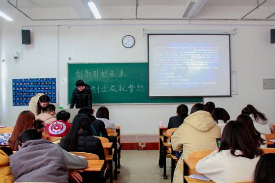
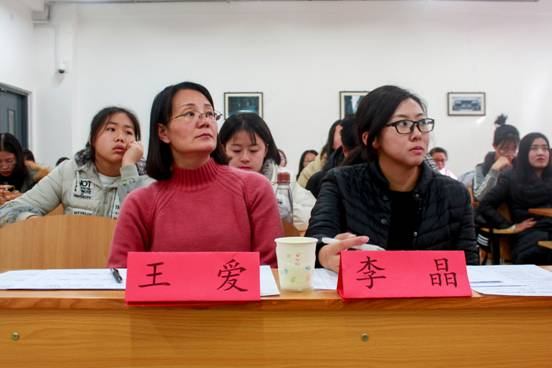

12月3日中午，由文学院学生会青创部组织举办的"创新引领未来，创业成就梦想"主题演讲比赛复赛在文科楼A102落幕。文学院分团委副书记李晶、辅导员王爱应邀担当此次比赛评委，17、18级的12名同学参加了本次比赛。比赛由学生陈红红主持。

经过初赛的比拼与淘汰，23名参赛同学中有12名脱颖而出，挺进复赛。比赛开始前，分团委副书记李晶就本次活动发表了讲话。她指出，本次比赛是在大众创业、万众创新的时代背景下举办的，目的是推动创新创业意识在我校的广泛传播，进而营造大胆创新、勇于追梦的良好氛围。她强调，学校第二课堂为此设立了专题板块，足以表明校领导对学子们创新创业活动的鼓励与支持，希望在座各位同学用最好的状态，赛出风格、赛出水平。

随后12名同学依次上台进行演讲。围绕"创新引领未来，创业成就梦想"这一主题，参赛选手或从微商、互联网等当下热门创业平台切入，细析创业前景；或以实现梦想、追逐未来为切口，畅谈创新妙想。同学们用自信的姿态，尽情挥洒所念所想，展现他们的独有风采。两位评委老师以演讲内容、语言表达、形象风度和现场效果四个方面作为评分标准，进行最后的排名。最终，戏文1708班徐春会、广电1806班张卓然、戏文1707班刘子豪突出重围，获得此次演讲比赛的前三名。
据悉，此次演讲比赛是我校"创新引领未来，创业成就梦想"主题活动组织形式之一，由校团委主办，计算机系和美术系分团委承办。我院积极配合学校的相关安排，举办了主题演讲比赛，不仅使同学们对"大众创业，万众创新"有了基本认知，更为我校营造创新创业的良好氛围贡献了自己的力量。
撰稿｜曹钰
摄影｜张运迪
审核丨刘晋云